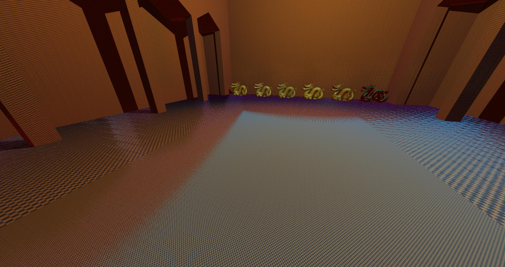

codingmonkey
Great work!
I guess that urho soon got an pbr renderer?)
No active IBL in these images (which is practically the most important part)
if i’m right this maps must be attached to urho’s Zones and lerp between few Zones

Great work!
I guess that urho soon got an pbr renderer?)
No active IBL in these images (which is practically the most important part)
if i’m right this maps must be attached to urho’s Zones and lerp between few Zones

Amazing work !
Is the PBR currently roughly compatible with mobile ?

Nice! 

That’s looking really nice !
Looks really good. Is there currently an option for Linear workflow a way to set gamma 2.2 .
Glad to see progress on this, Sinoid! This will benefit a lot of people, I’d like to test it out when I get the chance.
This might not be the best for runtime games but for VFX visualisation I stumbled upon this:
https://github.com/syoyo/tinyexr
In the same vein as stb_image, so no need to include IlmBase+OpenEXR as a dependency to get EXR I/O. Unfortunately tiled loading isn’t supported yet, which might be fun to experiment with, combined with ARB_sparse_texture (I’d like to one day make a simple turntable viewer using Urho3D and PBR that can load in very large EXR’s out of Mari/Mudbox out-of-core style).
Let me know and I’ll make a patch to Urho3D which incorporates this, should be simple to do.
-Alex
Thanks for your hard work on this ! I’m definitely going to try it out and compare against some old work I have laying about.
Specifically cubemaps must be able to load mipmaps from a DDS file
if you need manual created mips then use NvTools, it have a
detach.exe - extracts the MIP maps from a .DDS file
stitch.exe - stitches together multiple MIP levels to form one .DDS file
Looks cool but it s a bit off from this one : vimeo.com/96235208
Would be interesting to see how it works in different conditions with these HDRs : hdrlabs.com/sibl/archive.html
I think his code is a good reference too: github.com/derkreature/IBLBaker
Very cool Sinoid!
I’m primarily using OpenGL so I can look into porting it over as I’d like to move to PBR sooner rather than later. I’d like to try it out against some offline renderers when I get the chance as well.
For my use case though I prefer a more accurate gbuffer (16-bit float) rather than doing compression with things like YCoCg, but like you said it should be an easy port to GL.
For area lights I have GPU Pro 5 to work off of, but my math notation-fu is a bit lacking. A bit of a shame they can’t just talk in C/GLSL terms…
Hi Sinoid I’ll take a look at the github repo, thanks!
I still would like to make accurate area lights as I wanted to make something which matches VRay 3/PRman RIS light rigs as close as possible for faster previews of assets (as light rigs are all like that now + a HDRI). Same for just doing everything with 16-bit float gbuffers (and possibly upping the MRT setting from 4 to 8 to store other things like motion vectors, I’m not worried too much about memory usage or uber high framerates)…
I’m a fan of the YCoCg stuff though, but probably more for better compression in DXT5 like what ID Tech 5 did for Rage/Wolfenstein for better quality DXT transcoding. There shouldn’t be any loss in colour quality from what I remember though?
Thanks for repo! I currently try these shaders and tech just coped they in usual dirs where are other shaders and tech placed in urho.
when i’m set option to editor RenderPath - PBRDeferred.xml and trying to load some std models, but they not visible. Only UI and debug renderer things are visible.
maybe i’m missing something? also i’m add graphics.sRGB = true in start procedure of editor but view port it’s still black.
log is clear

2d grid also missing
Check that the material’s MatSpecColor is something real
i’m load a standard scene example with cubes. last master (just compiled) with your shaders within.
You may own reproduce this with clear master + put pbr shaders & tech into std urho’s folders.

I am also getting same problem. After doing some testing it appears to be invisible models when using any of the PBR materials. i have messed around with changing setting on the zone and changing the material. There was no error being printed until i changed the technique to PBRRoughNormalSpecAOIBL where i got the error undeclared identifier ‘ZoneCubeMap’
The latest commit works for IBL materials all the other PBR materials are sill not working
That’s cool I will give it a try on mobile.
The others all appear to functioning as intended
You want to say what other objects what not have a PBR-material would not to be rendered in PBRRenderPath, and it’s normal ?
Currently am testing last changes in both renders - DX9 and DX11, with PBRRenderPath with loading std “cubes scene” it’s still not visible, all are black.
also I trying add zone with maximized ambient color and change all colors in mats of these objects to maximum but it’s not helped.
maybe need do some additional tweak or setup for engine ? sRGB is really needed ? and if it really needed, if am turn-on sRGB in editor startup it’s enough?

Need an example of any scene. I cannot make to work the shaders correctly.


In the log no information except
...
[Wed Aug 05 14:45:35 2015] DEBUG: Allocated new screen buffer size 388x100 format 113
[Wed Aug 05 14:45:35 2015] DEBUG: Allocated new screen buffer size 388x100 format 113
[Wed Aug 05 14:45:35 2015] DEBUG: Allocated new screen buffer size 388x100 format 114
[Wed Aug 05 14:45:36 2015] DEBUG: Removed unused screen buffer size 388x100 format 113
[Wed Aug 05 14:45:36 2015] DEBUG: Removed unused screen buffer size 388x100 format 113
[Wed Aug 05 14:45:36 2015] DEBUG: Removed unused screen buffer size 388x100 format 114
[Wed Aug 05 14:45:45 2015] DEBUG: Allocated new screen buffer size 388x100 format 113
[Wed Aug 05 14:45:45 2015] DEBUG: Allocated new screen buffer size 388x100 format 113
[Wed Aug 05 14:45:45 2015] DEBUG: Allocated new screen buffer size 388x100 format 114
[Wed Aug 05 14:45:48 2015] DEBUG: Removed unused screen buffer size 388x100 format 113
[Wed Aug 05 14:45:48 2015] DEBUG: Removed unused screen buffer size 388x100 format 113
[Wed Aug 05 14:45:48 2015] DEBUG: Removed unused screen buffer size 388x100 format 114
...Use forward rendering
Oh, thanks for note. i’m thinking that it works only with PBRDeferred RenderPath.
Now I see something. i’m using PBRRoughNormalSpec.xml for this.

Donwload model and textures from this site
artisaverb.info/PBT.html
Then
Resample textures to 2048
and merge Roughness & Metalness into one texture (R channel - Roughness, G - Metalness) this is right ?
Also I found that all material’s lights better keep maximized and ambient color of Zone too. Add value for bright multipler of light also helped to bring black areas to normal visible.
And this, why they(triggers) are still black on counters ? if around model i placed two directional light for both side lighting

Codingmonkey, thanks for the tip about the color channels 

Codingmonkey, u need necessarily set zone texture (Textures/Skybox.xml, NOT Materials/Skybox.xml)
Sinoid
[quote]How much of a multiplier on the light? If you needed more than 3 than you probably need to set “graphics.sRGB = true” in the script console to turn the framebuffer into sRGB.
[/quote]
I don’t remember that value I set for bright multiplier exactly but more then > 3.5 or more then > 4
Yes, thanks - “graphics.sRGB = true” helps. Now I keep all light values in range [0…1].
But now all UIs is over brighten 
noIBL (Zone without Cubemap)

IBL (Zone with Cubemap “Skybox” + low zone ambient color (0.09, 0.09, 0.09, 0.09))

[quote]It looks you’ve got the material specular set to something other than 0,0,0,1 - which is important
[/quote]
What is right range? always keep spec in [1, 1, 1, 1] or use any value that more then zero ?
if I set specColor [0,0,0,1] a spec highlight almost gone, only gradient of fresnel on view’s angles are little visible, I guess
also I play with Zone ambient color values. Is their value must keeping extremely low (0.05)? for example if we set some thing about [0.5, 0.5, 0.5, 0.5] “the skies fall to the gun” )
or for PBR we couldn’t use usual cube maps and must use special PMREMs or SH or what else… maps? )
1vanK
[quote]u need necessarily set zone texture (Textures/Skybox.xml
[/quote]Thanks.
[quote]the tip about the color channels
[/quote]this for PBRRoughNormalSpec…
and for PBRGlossNormalSpec… you must use
about generating PMREMs
did you taste this AmdCubemapGen (Lagarde’s version) ?
i’m download it, and add urho’s standard sky by each cubemap side images into sphere. Then do something with filtering and save it as out_00.dds got 6-images (x+,x-,y+,y-,z+,z-)
then I create cube.xml (like skybox.xml) add these images into it.
and then I try to load it into zone, but no any changes, it looks as if the cubemap is not loaded.
add:
I’m test this with last master and now it working.
[video]https://youtu.be/L3tfvD7KYJs[/video]
But I have a question about mips: Is IBL use all these cubemap mips ? And Is urho really load all these mips for cubemap, then doing dds loading ?
also I delete sRGB = true from editor and create new RenderPath (based on Forward.xml) with adding lines from GammaCorection.xml (post process) at the end of RenderPath
<renderpath>
<command type="clear" color="fog" depth="1.0" stencil="0" />
<command type="scenepass" pass="base" vertexlights="true" metadata="base" />
<command type="forwardlights" pass="light" />
<command type="scenepass" pass="postopaque" />
<command type="scenepass" pass="refract">
<texture unit="environment" name="viewport" />
</command>
<command type="scenepass" pass="alpha" vertexlights="true" sort="backtofront" metadata="alpha" />
<command type="scenepass" pass="postalpha" sort="backtofront" />
<command type="quad" tag="GammaCorrection" vs="GammaCorrection" ps="GammaCorrection" output="viewport">
<texture unit="diffuse" name="viewport" />
</command>
</renderpath>But actually most time in video i’m using std Forward.xml RenderPath. because this over brightening I don’t like it(
apps
links: code.google.com/p/cubemapgen/dow … n-1_66.zip
links: irfanview.com/ + download plugins for dds view
before this I download and do some test in IBLBaker
look at this picture

I guess that Urho’s PBR still need some fixes or tweaks for do PBR more closer to this quality
Are there any plans to add scene capture components to automatically generate and assign them to a zone. I think such a feature would make PBR allot easier to use.
Also after some testing i found that having a directional light perpendicular to the surface causes some strange problems. The problem is very easy to replicate on my side under the D3D11 renderer (not tested other yet)
Ill look into doing dynamic scene capture my first thoughts where to add a scene capture button to zones that would place 6 cameras render to a texture that would become a cube map but not sure how feasible this approach would be.
[quote=“Sinoid”]
Noted. I’ll see if I can reproduce.[/quote]
I will keep looking through the shaders to see if i can find anything can may cause it
After playing with the shaders a little bit i turns out changing
[code]
float3 toCamera = normalize(worldPos.xyz - cCameraPosPS);
const float3 Hn = normalize(-toCamera + lightDir);
const float vdh = abs(dot(toCamera, Hn));
const float ndh = saturate(dot(normal, Hn));
const float ndl = saturate(dot(normal, lightDir));
const float ndv = saturate(dot(normal, -toCamera)) + 1e-5; [/code]
into
[code]
float3 toCamera = normalize(-worldPos);
float3 Hn = normalize(toCamera + lightDir);
float vdh = saturate(dot(toCamera, Hn ));
float ndh = saturate(dot(normal, Hn ));
float ndl = saturate(dot(normal, lightDir));
float ndv = abs(dot(normal, toCamera)) + 1e-5; [/code]
seams to of fixed some of the issues i had. There was also a bug with specular facing the wrong direction that this change also seams to fix under certain angle. Along with this change i also merged BRDF diffuse into the current deffered lighting, this helped negate some of the greasy look the materials had, i had to include the light ramp because this method negated the light ramp from diff
#ifdef DIRLIGHT
float3 diffuseTerm = Diffuse(diff, roughness, ndv, ndl, vdh) * ndl * lightColor;
#else
float3 lightVec = (cLightPosPS.xyz - worldPos) * cLightPosPS.w;
float lightDist = length(lightVec);
float3 diffuseTerm = Diffuse(diff, roughness, ndv, ndl, vdh) * lightColor * Sample2D(LightRampMap, float2(lightDist, 0.0)).r;;
#endif
do you have a GL Deferred version of the shaders? i had an attept myself as there is no deferred version on the git and results are not as expected although I’m not sure what I’m missing. i believe the issues is somewhere within YCoCg that i ported but I’m not entirely sure
DirectX11 results:
OpenGL3 results(port):
DeferredGBuffer.glsl
[code]#if defined(PBR) && defined(DEFERRED)
/// Convert an RGB color into YCoCg
/// color: input color to convert
vec3 YCoCg_FromRGB(in vec3 color)
{
return vec3(
0.25f * color.r + 0.5f * color.g + 0.25f * color.b,
0.5f * color.r - 0.5f * color.b + 0.5f,
-0.25f* color.r + 0.5f* color.g - 0.25f * color.b +0.5f);
}
/// Convert a YCoCg encoded color into RGB
/// ycocg: The YCoCg encoded color to convert
vec3 YCoCg_ToRGB(in vec3 ycocg)
{
ycocg.y -= 0.5f;
ycocg.z -= 0.5f;
return vec3(
ycocg.r + ycocg.g - ycocg.b,
ycocg.r + ycocg.b,
ycocg.r - ycocg.g - ycocg.b);
}
/// Extract Albedo and specular components from interleaved
/// coords: screen coordinates of the interleaved pixel
vec2 YCoCg_GetInterleaved(in vec2 coords)
{
// vec4 tex = texture2D(sAlbedoBuffer, coords + vec2(cGBufferInvSize.x,0.0f))
return texture2D(sAlbedoBuffer, coords + vec2(cGBufferInvSize.x,0.0f)).zw;
}
/// Encodes the normal as Lambert Azimuth equal-area
/// normal: world space normal to pack
/// viewDir: viewing direction vector of the camera
vec2 EncodeNormals(in vec3 normal, in vec3 viewDir)
{
vec2 enc = normalize(normal.xy) * sqrt(-normal.z * 0.5f + 0.5f);
return enc * 0.5f + 0.5f;
}
/// Decodes the normal from Lambert Azimuth equal-area packing
/// screenNormal: 2 channel packed normal from GBuffer
/// viewDir: viewing direction vector of the camera
vec3 DecodeGBufferNormal(in vec2 screenNormal, in vec3 viewDir)
{
vec4 nn = vec4(screenNormal, 0.0f, 0.0f) * vec4(2.0f,2.0f,0.0f,0.0f) + vec4(-1.0f,-1.0f,1.0f,-1.0f);
float l = dot(nn.xyz,-nn.xyw);
nn.z = l;
nn.xy *= sqrt(l);
return normalize(nn.xyz * 2 + vec3(0.0f,0.0f,-1.0f));
}
/// Utility function for writing into the GBuffer, Places all GBuffer writes into a single place
/// screenPos: screen position of the pixel
/// albedo: albedo
/// specular: specular color
/// wsNormals: surface normal in worldspace
/// depth: depth position of the pixel
/// roughness: roughness of the surface
void WriteGBuffer(out vec4 oAlbedo, out vec4 oNormal, out vec4 oDepth, in vec3 viewDir, in vec2 screenPos, in vec4 albedo, in vec3 specular, in vec3 wsNormals, in float depth, in float roughness)
{
// 2 channel normal
oNormal.xy = EncodeNormals(wsNormals.xyz, viewDir.rgb);
oNormal.z = roughness;
oNormal.w = 0.0f;
// Interleave Co/Cg in a checkboard pattern
vec3 ycocgSpec = YCoCg_FromRGB(specular);
vec3 ycocgAlbedo = YCoCg_FromRGB(albedo.rgb);
float x = screenPos.x;
float y = screenPos.y;
bool pattern = mod(x, 2.0f) == mod(y, 2.0f);
oAlbedo.r = ycocgAlbedo.r;
oAlbedo.g = pattern ? ycocgAlbedo.b : ycocgAlbedo.g;
oAlbedo.b = ycocgSpec.r;
oAlbedo.a = pattern ? ycocgSpec.b : ycocgSpec.g;
// Write depth
oDepth = vec4(depth);
}
/// Extract YCoCg embedded abledo and specular
/// screenPos: position in the screen
/// coded: the encoded colors RGBA
/// abledo: output for decoded albedo
/// specColor: output for decoded specular color
void DecodeYCoCgElements(in vec2 screenPos, in vec4 coded, out vec3 albedo, out vec3 specColor)
{
vec2 interleaved = YCoCg_GetInterleaved(screenPos);
vec3 ycocgAlbedo = vec3(coded.rg, interleaved.x);
vec3 ycocgSpecular = vec3(coded.ba, interleaved.y);
float x = screenPos.x / cGBufferInvSize.x;
float y = screenPos.y / cGBufferInvSize.y;
// swap channels if necessary
bool pattern = mod(x, 2) == mod(y, 2);
ycocgAlbedo.rgb = pattern ? ycocgAlbedo.rbg : ycocgAlbedo.rgb;
ycocgSpecular.rgb = pattern ? ycocgSpecular.rbg : ycocgSpecular.rgb;
albedo = YCoCg_ToRGB(ycocgAlbedo);
specColor = YCoCg_ToRGB(ycocgSpecular);
}
#endif[/code]
[quote=“Sinoid”]Ooops, I don’t use deferred anything on GL. I will catch that up this evening.
I can see you’ve got the pink/greens with some dithering going on and it’s probably a flickering mess when you move the viewport around. That should just be that your “vec2 screenPos” in WriteGBuffer came from gl_FragCoord.xy or some other 0-1 ranged value.
On DX9/DX11 VPOS and SV_Position are in 0-ViewportWidth and 0-ViewportHeight. If you used gl_FragCoord.xy for WriteGBuffer “screenPos” you’ll have to divide it by cGBufferInvSize.x and cGBufferInvSize.y to turn it into viewport sized coordinates (ie. a value between 0 and graphics.width instead of 0 and 1).
[/quote]
That don’t seam to of solved the problem although the colour is being added into the diffuse only. I guess ill wait until you solve it in the main repo. in the mean time ill look more into local IBL
Edit:
I tracked it down to being a problem with the albedo color in the deferred shader don’t yet know where i went wrong but i guess i can track it back through the shader and see what i find.
Edit2:
I believe the error is within the YCoCg conversion although i have never looked into how the conversion should be done and cant seam to find any resources on the topic.
There error looks to be with the assigning the color channels to the albedo buffer, i found a temporary fix by swapping abledo b channel to be the specular blue as shown in the code below.
Original (same as hlsl):
oAlbedo.r = ycocgAlbedo.r;
oAlbedo.g = pattern ? ycocgAlbedo.b : ycocgAlbedo.g;
oAlbedo.b = ycocgSpec.r;
oAlbedo.a = pattern ? ycocgSpec.b : ycocgSpec.g;Temporary fix:
oAlbedo.r = ycocgAlbedo.r;
oAlbedo.g = pattern ? ycocgAlbedo.b : ycocgAlbedo.g;
oAlbedo.b = ycocgSpec.b;
oAlbedo.a = pattern ? ycocgSpec.r : ycocgSpec.g;[quote=“Sinoid”]ABSOLUTELY NOT. You messed up somewhere else. It’s a phenomenological filter, might as well just go for the gold and swap R and G in a Bayer filter. If that actually fixes anything, you have bigger problems. A juxtaposition of elements is not an acceptable reason to make a later juxtaposition, fix the first juxtaposition if that’s the problem.
[/quote]
I admit it was a really bad and temporary way to make the scene look correct and I was not expecting to use it for any long term plans. It was less of I fixed it and more of this corrects the look so the problem has been narrowed to. Although with your implantation I can compare my atept to what you made and find the true problem. Thanks for doing the gl deferred
I got this errors if i’m switch editor to use PBRDiffered.xml RenderPath. And NV driver are crash after few debug lines in console

DX11 renderer, last master + yours last PBR Shaders
Zone use usual Skybox texture.
with forward it looks works as usual
also why is backside (unlited side) (scene have only one directional light + zone skybox) of Cerberus gun are so shines? It’s looked little weird

without Zones it’s looks more realistically and more wet. more wet metal it’s good )

add:
I think it’s over brighten on a backside because cubemap have a lot white color power.
And currently in IBL mode shader getting light mostly from cubemap. I do not familiar enough with PBR but for that reason are standard lights in this case ?
so that why I decide to create simple scene in blender and create save EnvMap with low power of white color
blenderartists.org/forum/showthr … om-blender


edit with gimp to get x+x-y+y-z+z- images (sides) and then add these images to ModifiedCubeMapGen-1_66 and generate PREM cubemap.
Save with mips. OutputCube.dds
Change layout in OutputCube.xml
<cubemap>
<image name="OutputCube.dds" layout="verticalcross" />
</cubemap>
and now I guess the over brighten of the backside(shadowed) is more less then in case skybox.xml


The problem was lack of understanding of YCoCg, I tried looking up YCoCg on google but couldn’t find anything detailing what it does. From my current understanding it works as image compression for the GBuffer. I’ll try look deeper and see if I can find anything.
Yes i’m understand what IBL cubemap consist color of some environment (part of scene) and light/color that it have, it falls on pbr-objects.
But am not only about this. How we (in case of IBL using) may control lighting of scene ? if it actually constant for all objects that placed in this Zone.
Let’s say we have a space ship room with many lights, various size and some static objects, or emitted light object and then on trigger we turn off all light in this room(Zone).
Now, how we change lighting for our PBR-objects in this Zone if they still using IBL with high-light version cubemap and we got very light object in the dark.
Probably in this case we may bake two version of IBL-cubemap with all light - on and case then it off. And change IBL-cubemap for shader on trigger.
But if we need slow-blink light or flying light around in the room what we must do in this case ?
Hello,
Nice work on the PBR pipeline.
I am having a problem with the IBL; it draws the specular map on the terrain for some reason. The terrain still uses the default terrain shader.
Also, it does not work currently with Deferred or PBRDeferred render paths.
Here is a screenshot: (Effect is strengthened to show the specular map on terrain)

Here is the material I am using:
<?xml version="1.0"?>
Am I using it in the wrong way or does it not work with terrain properly.
Anyways, thanks for letting us use this wonderful pipeline.
Cubemap generation works now:
Great work! Is we will have opportunity to setup it for: resolution sizes, update rate(baking scene rate), distance, masks ?
it will be used only for once baking at scene’s start or it may be used on PostUpdate(for example) or some event trigger ?
Hey guys did anyone get this working on OpenGL as I don’t have Windows to test it ?
Is there any chance you can add area lighting, preferably texture areas lights. I was reading the notes on Moving Frostbite to Physically Based Rendering and they mentioned Area Lights are key to the overall look of a scene, but also said it was one of the harder features to implement. I also ask for textured area lights as it would serve as a real time alternative to emisive material. And will also look better in PBR
The OpenGL PBR renderer is working, Sinoid did a good job with it.
I have been using your PBR for a while now and a single issues keeps showing up, i have been trying to find what has been causing the issues but it hasn’t been consistent and if your not looking for the affect you wont notice it until now when i changed the set up of my level.
Image of the issue:
From what i have found this issue looks to be tied to normals and is only affecting normals that face directly -Z. I have been looking around in the shader for a while to see what i can find but the only thing that removed this issue was changing the way the normals where passed from LitSolid.hlsl to DeferredLight.hlsl back to how it is handled in the non-PBR renderer. When doing this i had to pass the roughness in the alpha channel. I understand this is far from a fix but it may help you track down the true cause of the issue.
The model used was the built in Cube primitive. although i have seen it affect the sphere primitive and custom models in in small patches, i have an image somewhere of it affecting a model. As for the normals it wasn’t intended to be a fix it was looking for any way i could work around the problem to achieve the same end results until a fix was found.
Images of the affect on a rounded model. Affected area facing exactly -Z:
Image of the world normals rendered in replace of PBR:
I had a look through the UE4 shader code to find how they handle normal compression and found how they do it, im not sure how effective there method is although it id assume that encoding and decoding is faster based off the math that is done.
UE4 normal encoding/decoding:
[code]float3 EncodeNormal( float3 N )
{
return N * 0.5 + 0.5;
//return Pack1212To888( UnitVectorToOctahedron( N ) * 0.5 + 0.5 );
}
float3 DecodeNormal( float3 N )
{
return N * 2 - 1;
//return OctahedronToUnitVector( Pack888To1212( N ) * 2 - 1 );
}[/code]
Did you manage to fix the problem i was having with PBR, im curious as im looking on using PBR on personal projects.
Also on a side note i believe you mentioned about doing Parallax correction to cubemaps, and Screen Space reflections, have you made any progress on these/ have ideas on how you want to approach it. I have looked into SSR but due not having much knowledge of shaders i couldn’t work out line tracing on the GPU. I believe if i could overcome this issue id likely be able to implement SSR using a similar technique to Frostbite as i believe it provides the best results.
[quote=“Sinoid”]Parallax correction is the only one I’ve considered and fiddled with. Requires Urho3D modifications (just have to add shader parameters for zone sizes), but sticking the 3 cpp/h files involved for manual merging is viable.
SSR, I’d look at the ray tracing based parallax mapping techniques, they’re not terribly different as far as how they function - it’s all just in a different space.
Second poster from this thread: opengl.org/discussion_board … eflections , presents probably the cleanest GLSL code I’ve seen on the subject (SSR / not parallax in this case).[/quote]
Thanks for the pointers on SSR ill see what i do and if i get any result ill let you know. Also after testing i feel Parallax mapping is very important as i found my scenes looking very off without it.
[quote=“Sinoid”]I’ve pushed that out now. Switched the normal compression to stereographic projection. I wasn’t able to reproduce any of the artifacts afterwards.
[/quote]
Thanks ill give it a go see if i solved it on my side.
I was referring to Parallax cubemapping and the main reason i feel its important is allot of the reflections in the scene do not line up with the static object creating, i found this to be very immersion breaking. I once implemented parallax occlusion mapping, although if i remember correctly it worked diffrent from parallax heightmapping i didnt require ray tracing from my understanding at least (it was part of a tutorial)
Example of reflections not aligning (made material more less rough for example reasons)

I’m trying to learn shaders. It is a pity that you have deleted a repository
thank you )
I did a quick search through github and wasn’t able to find any other forks besides the one linked. I think when you remove a repository it also destroys the forking history, so they might be out there under another name?
If you decide to put the code back up for a day or two I could fork it to my account to ensure that the community has access to the most up-to-date version.
If this implementation is dead at least to the Urho I’ll look into my own implementation that will be open source
Why then this has been closed/removed/dead ???
Whatever you have is under the MIT, you’re free to do whatever you wish with it building upon it however you desire. I’ll send you a PM with a full release of rights that you should probably print out to keep on file (just in case I die young, and someone come hunting you down).
You’re getting it for a responsive rather than combative attitude.[/quote]
Thanks for your support, and ill be sure to put this to good use.

Hello
Who is familiar with?
github.com/souxiaosou/UrhoPBRCoreData
I’m going play with it. I’m wondering if anyone tried it and what should the file material format should be?
Vivienne
[quote=“vivienneanthony”]Hello
Who is familiar with?
https://github.com/souxiaosou/UrhoPBRCoreData
I’m going play with it. I’m wondering if anyone tried it and what should the file material format should be?
Vivienne[/quote]
Im currently very deep in the code, im trying to keep the project going although I was very distracted over the holidays. Not sure what you mean by material format but ill take a guess and say it supports both metal and specular work flows with interchangeable gloss and roughness. To create the material you must set the material technique to one that includes PBR, techniques that contain IBL in the name must be used on a PBR render path. As for textures you will require:
Metal/Roughness
Diffuse = albedo map
Normal = normal map
Specular = PBR map (roughness in red channel, metalic in green)
Specular/Gloss
Diffuse = albedo map
Normal = normal map
Specular = PBR Spec map (specular in RGB channels, gloss in alpha)
Hopefully that helps
For the best chance of the PBR being merged with the master branch would it be better to have PBR as a separate render path with separate material techniques, or replace the traditional renderer with the PBR renderer. I know if the choice was to me i would replace the default renderer completely as a PBR renderer would be just as easy to use and if i create it right it will provide much better results overall
if this is a voting )
I choose/vote for separated RenderPathes + separated Tech + separated Material = just few additional folders
bin\Materials\PBR
CodeData\Techniques\PBR
CoreData\Shaders\PBR
Also it maybe an option then you build engine from CMAKE options like - URHO3D_PBR_RENDERER and then you just got PBR mats and tech in std folders
In addition you may create you own DX/GLGraphicsPBR.h implementation and include it when you have set URHO3D_PBR_RENDERER option.
and of course you may have a mixed renderer PBR + old school renderer in same time as before doing it Sinoid.
if the choice was to me i would replace the default renderer completely as a PBR renderer would be just as easy to use
if to me I would drop all mobility render support stuff, only desktop
I never considered doing a completely separate renderer for PBR although i guess it shouldnt be hard to do as there is not much that changes other then material inputs and shaders. A mixed renderer would work but the main reason i avoided it is that i could be confusing to new developers, in addition to PBR materials not working on Non-PBR render paths.
If approached correctly i feel a PBR could work well on mobile platforms, just look at the work Epic and Unity have done to get PBR onto mobile. It will be a possibility but will need a lot of optimisation and careful choices.
Edit:
After working on IBL i discovered that using a more complex IBL technique similar to what is described in the Unreal PBR course notes (blog.selfshadow.com/publications … tes_v2.pdf). I found that using this complex IBL on Urho’s forward renderer caused me major performance drips to sub 30fps on my GTX970. Therfore my initial plans was to have the mobile PBR on the forward render path as it does not have the same issue.
After some work on PBR i got something im happy with that performs well from what i can test. Currently its only implemented in DirectX on a forward renderer as i wanted results im happy with before i moved forward with other renderers.
There are some oddities with roughness values on metalic objects due to the was that roughness in applied to the cubemap that causes the reflections to look extreamly weird.
Note: i recommend opening all images in a new tab as they dont seam to fit correctly on the forum
Roughness 0-1:
Metalic 0-1:
Overview of test scene:
Test model found on substance share (for personal reference only):
I have now fixed the shader bug that i was having before but quickly ran into another problem that im going to need help with. I need to find a way to optimise Urho’s Forward and Deferred render paths massively. The importance sampling requires 1024 samples to look correct but doing so slows my 970 to 12 fps on a simple scene, the max number of samples i am able to run at 60 fps is 64 samples. Any help with optimisations would greatly be appreciated.

{kind=link}
{kind=link}
{kind=link}
{kind=link}
{kind=link}
{kind=link}
{kind=link}
{kind=link}
{kind=link}
{kind=link}
{kind=link}
{kind=link}
{kind=link}